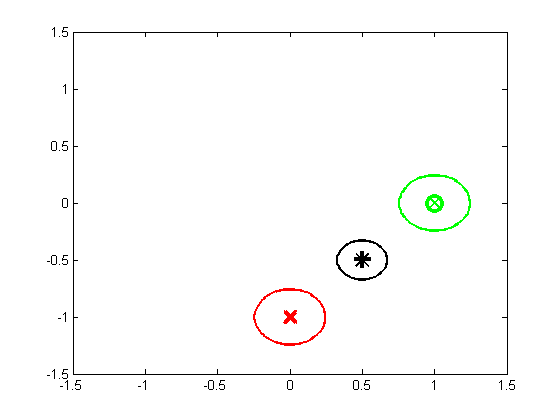
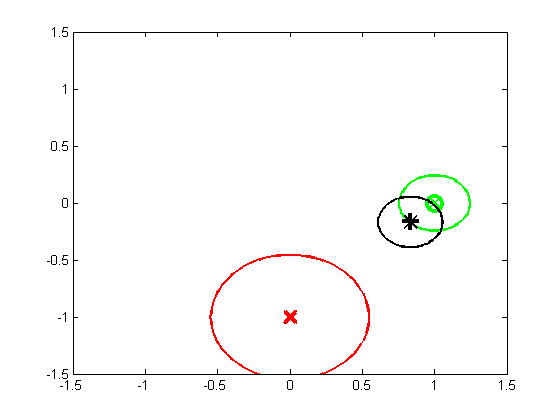
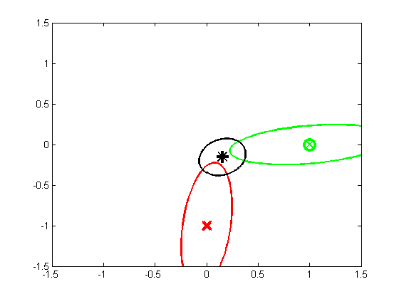

Bayesian updating of a 2D Gaussian
function gaussBayesUnequalCov()
Sigmas = {0.01*eye(2), 0.01*eye(2)};
helper(Sigmas, 'Equal')
Sigmas = {0.05*eye(2), 0.01*eye(2)};
helper(Sigmas, 'Two')
Sigmas = {0.01*[1 1; 1 10], 0.01*[10 1; 1 1]};
helper(Sigmas, 'Mixed')
end
function helper(Sigmas, suffix)
y1 = [0 -1]';
y2 = [1 0]';
y = [y1(:); y2(:)];
prior.mu = [0 0]';
prior.Sigma = 1e10*eye(2);
A = repmat(eye(2), 2, 1);
py.mu = zeros(4, 1);
py.Sigma = blkdiag(Sigmas{1}, Sigmas{2});
post = gaussSoftCondition(prior, py, A, y);
figure;
gaussPlot2d(y1, Sigmas{1}, 'color', 'r');
hh=plot(y1(1), y1(2), 'rx', 'markersize', 12, 'linewidth', 3);
hold on
grid off;
gaussPlot2d(y2, Sigmas{2},'color', 'g');
hh=plot(y2(1), y2(2), 'go', 'markersize', 12, 'linewidth', 3);
mu = post.mu; Sigma = post.Sigma;
gaussPlot2d(mu, Sigma, 'color', 'k');
hh=plot(mu(1), mu(2), 'k+', 'markersize', 12, 'linewidth', 3);
axis([-1.5 1.5 -1.5 1.5]);
printPmtkFigure(sprintf('mvnBayesUnequalCov%s', suffix))
end
  